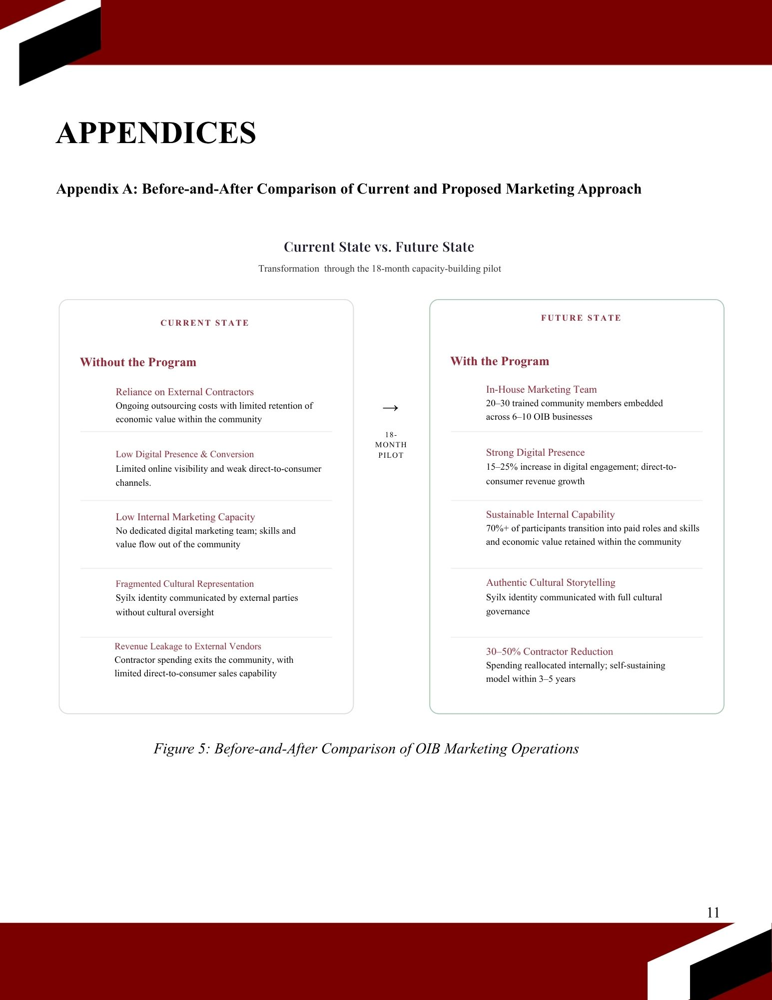
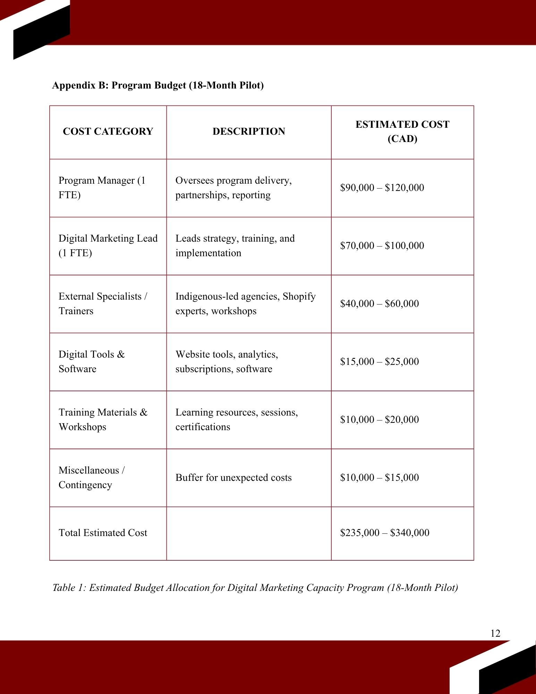

Digital Storytelling &
Marketing Capacity Program
my take
The assignment: propose a realistic business initiative for an Indigenous community.
I chose the Osoyoos Indian Band, one of the most financially self-sufficient First Nations in Canada. Not because they needed help surviving. Because they were ready to scale.
I pitched a Digital Storytelling and Marketing Capacity Program. The idea: stop outsourcing your story to people who don't know it. Build the team from within.
The financing section was the part I was most proud of. It wasn't theoretical. It was buildable.
The bigger argument: digital storytelling isn't a marketing problem. For a Nation that already controls its land, its businesses, and its governance, owning how that story reaches the world is the next logical step.
Academic project completed at UBC Sauder. Not affiliated with or commissioned by the Osoyoos Indian Band.
from the proposal

Before/after comparison of OIB marketing operations. The core argument in one visual: what outsourcing costs you isn't just money, it's authorship.
key finding
41% of Indigenous tourism businesses in BC are "doors open." Only 26% are considered market-ready. OIB operates in that gap: strong enough to build, not yet resourced to tell the story at scale. The program is designed to close that specific distance.

Left: estimated budget allocation for the 18-month pilot ($235,000–$340,000), broken down by role, tools, and training. Right: OIB revenue composition showing 65.8% own-source revenue — the financial foundation that makes the program viable without depending on a single funding source.
Academic project · UBC Sauder School of Business